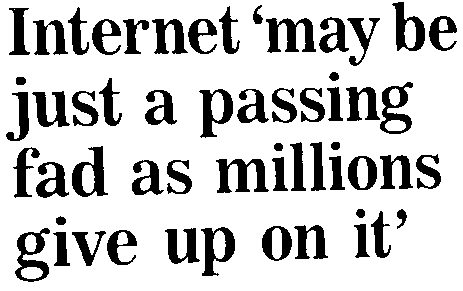
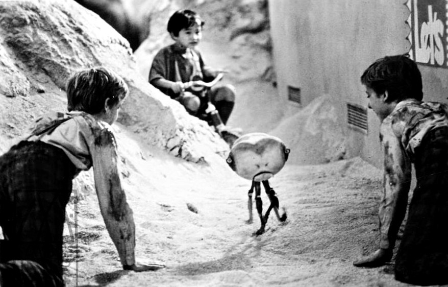
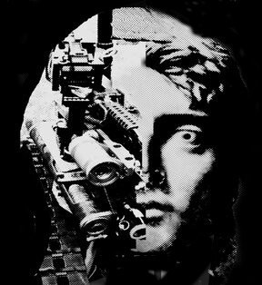
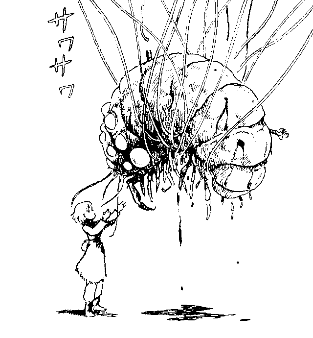
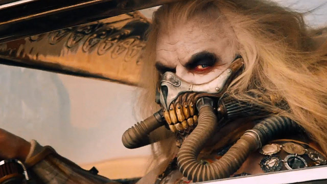
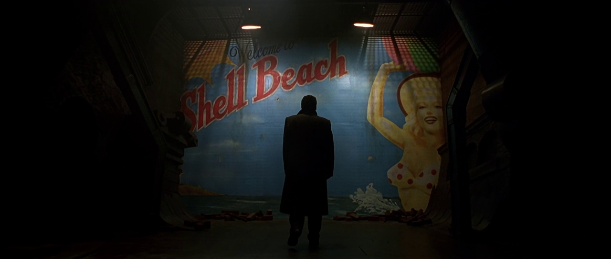
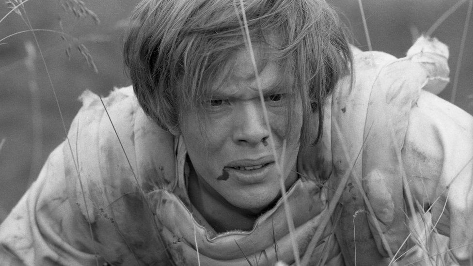
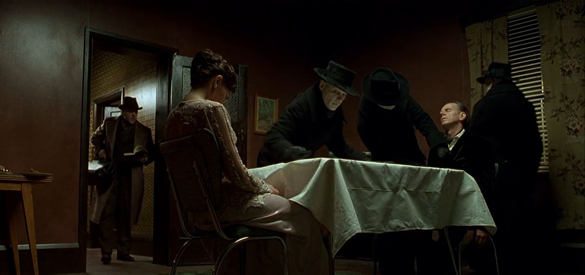
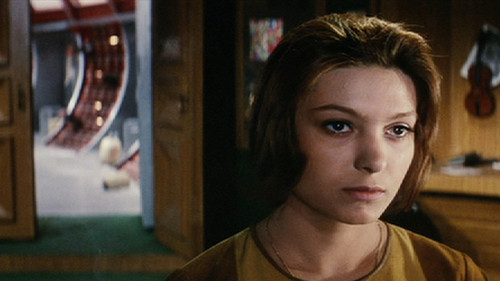
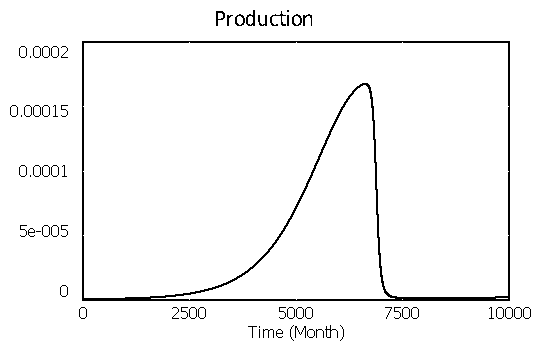

If we are surrounded by life, why is the universe silent? Shouldn't the whole universe be a noisy social media feed, everyone vying for everyone else's attention? The dark forest theory explaining that communication, because it reveals our existence to others, is a sign of stupidity rather than intelligence.
Technology is the active human interface with the material world.
Suppose one were to write a revolutionary book. If it is to be published, it must enter into the framework of the technical organization of book publishing. It must appeal to some public and hence must refrain from attacking the real taboos of the public for which it is destined. No one will publish a book attacking the real religion of our times, by which I mean the dominant social forces of the technological society.
Surrogate Activities
We indulge in the continual debasement of our attention and energy, get emotionally giddy as its squandered to the ignorant masses. We indulge in its narcistic promotion, revel in slowly becoming a greater center of attention; a center that becomes defined by various artificially created boundaries.
The social media user does not post for enjoyment, they enjoy the indulgent masochism of its dopamine exhaustion, they indulge in it as they do a deep autumn depression, with an unconsciously mechanical action which draws them from their potential as a Being. Stripped to the core there is nothing new here, what is found once more is one's lust for sleep.~
A long-continuing day was given to them for the life they loved so much, for they died not by grievous ills consumed, but as o'ercome by sleep.
I asked one Amish person why they didn't use automobiles. He simply smiled and turned to me and said, "Look what they did to your society." And I asked "what do you mean? "Well, do you know your neighbor? Do you know the names of your neighbors?" And, at the time, I had to admit to the fact that I didn't.
And he pointed out that my ability to simply bypass them with the windows closed meant I didn't have to talk to them. And as a result, I didn't.
Sciences become respectable by confining themselves to the feasible, and that is precisely what computing science did: it focussed its attention on the intellectual challenge of how to specify and design reliable software systems of great sophistication. In doing so, it came to a few unescapable conclusions, all clarifying and inspiring for the computing scientists involved, and each of them unacceptable to the world at large, that refused to part from its cherished dreams.~
The government or control of society or industry by an elite of technical experts.
Science is hated because its mastery requires too much hard work, and, by the same token, its practitioners, the scientists, are hated because of their power they derive from it.~
Today, you're either above the API or below the API. You either tell robots what to do, or are told by robots what to do.
The end of work is the upcoming abstraction and machine automation of mostly all that is currently understood as work. Inside capitalism, the critical moment is specifically where technology meets capital: who gets to own this capital; the "factory without the worker".
The end of work, or the end of jobs, is an immediate reality. For most, who are currently subsisting through participation in the wage labour system, this is also end of getting paid and able to "not die". The idea that for every job at the bottom closed by technology, there's one opening at the top is ridiculous.
To a neocameralist, a state is a business which owns a country, dividing logical ownership into negotiable shares, each of which yields a precise fraction of the state's profit.

The state did not appreciate the journeymen's associations' tendency to strike, nor their ability to move as they pleased when work conditions were unfavorable. The state's response was to take over the management of the construction sites, merging all the divisions of labor together in the supreme distinction between the intellectual and the manual, the theoretical and the practical.
By separating intellectual and physical labor the state took power away from both types of workers. The manual laborers could then only build what others had planned and the planners no longer had the capacity to build anything at all.
Manufacturing Scarcity
People have a native capacity for healing, consoling, moving, learning, building their houses, and burying their dead. Each of these capacities meets a need. The means for the satisfaction of these needs are abundant so long as they depend primarily on what people can do for themselves, with only marginal dependence on commodities.
These basic satisfactions become scarce when the social environment is transformed in such a manner that basic needs can no longer be met by abundant competence. The establishment of radical monopoly happens when people give up their native ability to do what they can do for themselves and for each other, in exchange for something "better" that can be done for them only by a major tool.
Once men turned their thinking over to machines in the hope that this would set them free. But that only permitted other men with machines to enslave them.Frank Herbert, 1966.
Lauderdale pointed out that the only way to increase private riches was to reduce what he called public wealth, or the commons. To enclose things that were once free so that people have to pay in order to access them. To illustrate, he noted that colonialists would often even burn down trees that produced nuts and fruits so that local inhabitants wouldn't be able to live off of the natural abundance of the earth, but would be forced to work for wages in order to feed themselves.
As a first step, new standards were set for the construction of dwelling units. These standards were intended to protect the person who purchases a house, from exploitation by the industry producing it. Paradoxically, these same standards deprived many more people of the traditional opportunity to house themselves.
Suffering and tragedy and folly will not disappear in a purified world.
technocracy
- Sybil attack: An attacker subverts the reputation system of a P2P network by creating a large number of pseudonymous identities and uses them to gain a disproportionately large influence.
- Siren Servers: Instead of paying each individual for their contribution to the data pool, the server concentrate wealth in the hands of the few who control the data center. Alluding to the Sirens of Ulysses.
- Paradox of tolerance: States that if a society is tolerant without limit, its ability to be tolerant is eventually seized or destroyed by the intolerant.
- The Veil Of Ignorance: Behind this veil, you know nothing of yourself and your natural abilities, position in society, sex, race, nationality, or individual tastes. All individuals are simply specified as rational, free, and morally equal beings.
- Behavioral sink: A term used to describe the collapse in behavior(stress, alienation, hostility, sexual perversion, parental incompetence, and rabid violence) which resulted from overcrowdedness in an experiment on mice, drawing parallels with societal collapse found in the human Megalopolis.
- Dunbar's Number: A suggested cognitive limit of 150, to the number of people with whom one can maintain stable social relationships.
- Kessler syndrome: A theoretical scenario in which the density of objects in low Earth orbit due to space pollution is high enough that collisions between objects could cause a cascade in which each collision generates space debris that increases the likelihood of further collisions.
- Consumer farming: The expansionistic practice of looking for new customers to increase sales.
- Jevons paradox: Occurs when technological progress or policy increases the efficiency with which a resource is used, reducing the amount necessary for any one use, but the rate of consumption of that resource rises due to increasing demand.
- The Iron Triangle: Entrapping interdependence relationships between a house (because you need a place to live), a job (because you need to pay for the house) and a car (because you need to be able to commute to the job).
- Procrustean: Describes situations where an arbitrary standard is used to measure success, while completely disregarding obvious harm that results from the effort.
They constantly try to escapeT.S. Eliot, The Rock 
From the darkness outside and within
By dreaming of systems so perfect that no one will need to be good.
But the man that is will shadow
The man that pretends to be.
He drops water onto hordes of irradiated wastrels like a Roman emperor showering plebs with bread and circuses. "Do not become addicted to water," he cautions them.
Preservation of the sick life of medically dependent people in an unhealthy environment became the principal business of the medical profession. Natural immunity, and traditional culture could not cope. On a world-wide scale, medical care concentrated on breeding a human stock that was fit only for domesticated life within an increasingly more costly, man-made, scientifically controlled environment.
Hospital-born, formula-fed, antibiotic-stuffed children thus grow into adults who can breathe the air, eat the food, and survive the lifelessness of a modern city, who will breed and raise at almost any cost a generation even more dependent on medicine.
Rates of myopia have risen sharply in recent decades, and researchers have projected that half the world will be myopic by 2050. One study by the College of Optometrists found that myopia is more than twice as common among kids in the U.K. now than it was the 1960s.
When the oil runs out, who will still have seeds that can grow without it? ~
For when the whole vast world of men shall be — By waters ruined, ye'll wail a dreadful song.
I, the Monster, am doing the thinking, run toward the destiny I have planned for you, run without stopping to the end of the road where I have put the Bomb or the complete degradation of humanity — we're almost there, run with your eyes closed, it's easier, shout all together Justice — Patriotism — Progress — Intelligence — Dignity — Civilization.
What, you aren't running — you're sailing around on your boat, just to think! and you dare complain into your tape recorder saying what you have in your heart just wait, you poor fool, I'm going to shoot you down in flames guys who get angry and speak out are very dangerous for me, I have to shut them up if too many of them started getting angry, I wouldn't be able to drive the human cattle as I please, their eyes and ears blocked by Pride, Stupidity and Cowardice and I'm in a hurry to get them, bleating and satisfied, where I want them to go.
And I know all that is no dream, everything beautiful and good that men have done they built with their dreams but back there, the Monster has taken over for men, it dreams in our place. It would have us believe that man is the centre of the universe, that all rights are his on the pretense that he invented the steam engine and lots of other machines, and that he will someday reach the stars if he just hurries a little before the next bomb.
Compulsory Consumption
They drive cars because they consider the pollution created by one car insignificant, and because they do not feel personally deprived of freedom when they drive. It is also difficult to be protected against monopoly when a society is already littered with roads, schools, or hospitals, when independent action has been paralyzed for so long that the ability for it seems to have atrophied, and when simple alternatives seem beyond the reach of the imagination.
The inhabitant of the city is in touch with thousands of systems, but only peripherally with each. He knows how to operate the TV or the telephone, but their workings are hidden from him. Learning by primary experience is restricted to self-adjustment in the midst of packaged commodities. He feels less and less secure in doing his own thing. Cooking, courtesy, and sex become subject matters in which instruction is required.
When they want you to buy something they will call you. When they want you to die for profit they will let you know.
No depersonalisation, no degradation of man is more effective than the one that seems to preserve the freedom of the personality and the rights of that individual. Each separately undergoes the conditioning process, which works just as well in the cages where individuals are now confined, despite their loneliness, in their millions of isolated units.
This treatment is inconspicuous since it is presented as fun, since it conceals from its victim the sacrifices it demands of her and leaves her with the illusion of a private life or at least of a private space. As the power of machines increases, the more the role of persons decreases to that of mere consumers.
Year by year it was served with increased efficiency and decreased intelligence. The better a man knew his own duties upon it, the less he understood the duties of his neighbour, and in all the world there was not one who understood the monster as a whole. Those master brains had perished. They had left full directions, it is true, and their successors had each of them mastered a portion of those directions. But Humanity, in its desire for comfort, had over-reached itself. ~
Forests are turned into paper and newspapers that call for the forests to be saved.
The whole place has been crafted, complete with faux-authentic food crates and coffee bean sacks, to recreate this farm-to-market experience that stopped existing a long time ago.
Symbols, signs, and simulations had become so all-encompassing, that it is not longer possible to distinguish the real and the symbol. Melancholy is the quality inherent in the mode of disappearance of meaning, in the mode of volitilisation of meaning in operational systems.
What we consider to be social reality is indefinitely reproducible and extendable, with the copy indistinguishable from the original, or perhaps seeming more real than the original.
The modern progress economy dealt in technological potential and progress, whereas the postmodern innovation economy dealt in windows of opportunity that open and close. No one cares about your product; we care about your adoption. No one cares about what your technology does; we care about what problems it solves for users, and how fast you can grow.
Production and the ideals of production have been so successful, that a new stage is reached, a stage that has a certain banality or triviality where the ideal disappears and becomes so commonplace that it does not have meaning associated with it.
The ability to kill thousands at the press of a button was no longer matched by the ability to take the measure of the calamity wrought. This promethean lag often anaesthetised our faculties, including our ability to fear the danger that threatens us, for the simple reason that we cannot know what we cannot understand or represent concretely or morally to ourselves. These limitations in us induced a state of irresponsibility, a form of nihilism in action that maintained us as atomised individuals while we laboured toward our own irrelevance and extinction.

It has never been spread out, yet, they said it would cover the whole country, and shut out the sunlight! So we now use the country itself, as its own map, and I assure you it does nearly as well.Lewis Carroll(Sylvie)
The desert of cities is equal to the desert of sand — the jungle of signs is equal to that of the forests — the vertigo of simulacra is equal to that of nature — only the vertiginous seduction of a dying system remains, in which work buries work, in which value buries value. ~
When one weighed material comforts against something as ineffable, and unpriceable, as integrity, standing up for one's beliefs could seem like a utopian gesture — a moral luxury that was admirable, perhaps, but quite pointless.
Because to tell the truth, nothing happens anymore. Nothing any longer has the time to happen. There is no duration left for anything to unfold in. Nothing can anchor itself in the world long enough to make sense. While the present still has a duration, the hyperpresent no longer does.
After Death, Francois J Bonnet The world is going digital, we're told, and someday there will even be digital real estate inhabited by people in digital clothes drinking digital orange juice extracted with digital juicers. People will play at the lives they once took seriously, lives that had once had heft and weight, and the juice content of juice will fall to zero. I suspect my old physical squeezer will still be working then, but the rest of my kitchen gear won't. Not much of it. I might not last, either. I fear I won't.
The psychic toll of goods that don't endure is that one loses faith the future will even come, and then one loses interest in it coming, for little that we own or use or cherish seems likely to be there with us to meet it. ~
Le facadisme est la pratique architecturale qui consiste à inclure une façade plus ancienne dans une nouvelle construction.
We live in a time of social, economic and ecological unravelling. All around us are signs that our way of living is already passing into history.
Collapse is the transition away from a globalized, hyperconnected and materially-abundant society, toward a state of greater precariousness, lesser abundance, potentially reaching a stage of existential risk for our species.
At the peak of the Seneca Cliff, the curve that describes the rapid phase transitions of complex systems on the basis of the principle that "growth is sluggish, but ruin is rapid." We see a green valley in the distance, but the road down the cliff is so steep and rough that it is hard to say whether we will survive the descent.
| Rapid | Collapse will happen rapidly on a global scale within a narrow timeframe. Local infrastructure failures, political instabilities, or extreme weather events will prevent a gradual transition. |
|---|---|
| Linear | Collapse will occur slowly and globally. Global infrastructure and production chains will be increasingly harder to maintain. Many nation-states and local communities will see their material conditions deteriorate over the years. Although this will lead to a reduction in population and welfare, the gradual transition will allow for adaptation. |
| Non-Linear | Due to ecological and infrastructural cross-dependencies, there will be a breaking point where several different and converging forces will be triggered. These will accelerate collapse before a stable situation is reached. This rate of change may be too rapid for humans to adapt to effectively. |
Creeping normalcy is how gradual changes can be accepted as the normal situation if these changes happen slowly, or incrementally.
The monetary system would not likely collapse in a random fashion but [would] be triggered when a coalition of corporate and banking interests, both public and private, determine that they are ready to profit from that transformation.
Newer homes and furniture burn faster, giving you less time to escape a fire. Research shows that 30 years ago, you had about 17 minutes to escape a house fire. Today it's only 3 or 4 minutes.
| Optimists | Pessimists |
|---|---|
| Deniers: there are no downward trends, climatic or ecological threats. The present order is not subject to threats of historic magnitude or capable of experiences compromised material and social well-being. Examples: Koch Brothers, Exxon, Clintel | Defeatists: the collapse is inevitable because we should have acted earlier. Now any technical and political solution is superfluous. |
| Technological Optimists: collapse is possible, but it is a technical problem that can be solved. In particular, new technologies in the ecological, energetic, and digital field will be able to reverse the phenomena we are observing. | Delayers: collapse is inevitable and the primary goal is to slow it down in order to extend current conditions as much as possible, making it easier to get through the collapse, and to minimize the cost in terms of human lives. |
| Reformists: collapse will be prevented by deep restructuring of the production system, welfare, and huge investments in ecological remediation. There will be a political tipping point due to the damage caused by the approaching collapse and the resistance of nation-states to act and protect the status quo. When that happens, sufficient forces will be released for radical interventions. | Post-collapsists: the collapse is inevitable and therefore we must act now to build conceptual, technical, and social tools that will serve us during and after the collapse in order to minimize long-term consequences. |
Uncivilisation is to accept the world for what it is and to make our home here, rather than dreaming of relocating to the stars, or existing in a Man-forged bubble and pretending to ourselves that there is nothing outside it to which we have any connection at all.
collapsology
- Dark Mountaineers: Artists who generally ascribe to the idea that climate collapse cannot be stopped or reversed, a forum in which one can be honest about their sense of dread and loss.
- Anthropocene: A proposed epoch dating from the commencement of significant human impact on Earth's geology and ecosystems, including, but not limited to, anthropogenic climate change.
- Simple pastoral: Merely another of our many vehicles of escape from reality, that doesn’t interrogate civilisation's main driving forces, but instead focuses on returning to rural simplicity.
- Freudian death drive: The hypothesis of a death instinct, the task of which is to lead organic life back into the inanimate state.
- Fossil Capitalism: A theory suggesting the modern economy is actually just a system that runs on fossil fuel.
- Age of Salvage: When a civilization breaks down, the most efficient economies are most often those that use its remains as raw material.
- Cornucopianism: Crackpot optimism, hopium.
- Drawdown: Stealing resources from the future.
- Wishcycling: Where people are hoping that something is recyclable and therefore they put it in with their recycling.
- The Jackpot: The mundane cataclysm of modernity itself. It is hundreds of millions of people driving to the supermarket in their SUVs, flying six times a year, and eating medicated animals for dinner.
Et ces nouveaux dieux ne reculant devant rien
Étaient prêts à tout pour arriver à leur fins
Pour s'enrichir encore ils ont rasé la Terre
Pollué l'air ambiant et tari les rivières
Mais au bout de cent ans des gens se sont levés
Et les ont averti qu'il fallait tout stopper
Mais ils n'ont pas compris cette sage prophétie
Ces hommes là ne parlaient qu'en termes de profits
Many who have learned from Hesiod the countless names of gods and monsters never understand that night and day are one
incoming devine lu linvega adaptation sabotage simulacra hundred rabbits